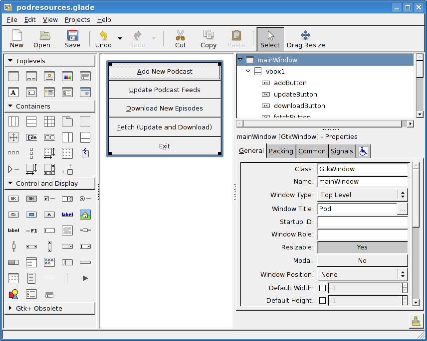
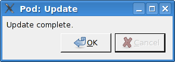

第 23 章：用 gtk2hs 进行图形界面编程¶
在本书前面的内容中，我们开发了一系列简单的文本工具。尽管这些工具提供的文本接口在大部分情况下都能令人满意，但在某些情况下，我们还是需要用到图形用户界面（GUI）。有很多可供 Haskell 使用的图形界面工具。在这一章中，我们将使用其中的一个，gtk2hs [53] 。
安装 gtk2hs¶
在我们研究如何使用 gtk2hs 工作前，需要先安装它。在大多数 Linux，BSD，或者其它 POSIX 平台，有已经打包好的 gtk2hs 安装包。你一般需要安装 GTK+ 开发环境，Glade，和 gtk2hs。安装的细节不同版本各有不同。
使用 Windows 和 Mac 的开发者应该查阅 gtk2hs 下载站 。从下载 gtk2hs 开始，然后你需要 Glade version 3 的版本。Mac 开发者可以从 macports 找到，Windows 开发者应该查阅 sourceforge 。
概览 GTK+ 开发栈¶
在深入代码前，让我们暂停一会考虑一下我们将要使用的系统的架构。首先，我们使用的 GTK+ 是一个跨平台的，用 C 语言来实现的 GUI 工具集。可以跑在 Windows，Mac，Linux，BSD 等等操作系统上。Gnome 桌面环境的下层就是用了它。
然后，我们使用的 Glade 是一个用户界面设计工具，可以让你用图形化的方式来设计你应用的窗口和对话框等。Glade 把你的设计保存在 XML 文件中，你的应用程序会在运行时加载这些 XML 文件。
最后使用的是 gtk2hs。这是一个 GTK+，Glade 以及一些依赖库的 Haskell 绑定。它只是很多编程语言对 GTK+ 绑定的一种。
使用 Glade 进行用户界面设计¶
在这一小节中，我们将为 第22章中开发的播客下载器 开发一个图形界面版本。我们的第一项任务就是在 Glade 中设计图形界面。当我们完成设计时，我们将编写 Haskell 代码集成进应用中。
因为这是一本 Haskell 书，而不是一本图形界面设计书，所以我们快速带过前面的步骤。需要更多关于使用 Glade 设计图形界面的信息，你可以参考下面的资源：
Glade 基本概念¶
Glade 是一个图形界面设计工具。让我们用图形界面的方式来设计图形界面。我们可以使用一堆 GTK+ 的函数来创建窗口组件，但更简单的方式是使用 Glade。
我们要使用 GTK+ 来开发的基础的东西叫窗口小部件。一个窗口小部件代表了 GUI 的一部分，可能这个小部件还包含了别的小部件。比如一些小部件包含了一个窗口，对话框，按钮，以及带文字的按钮。
我们在 Glade 中初始化小部件树，最高级的窗口在树的根部。你可以把 Glade 和小部件想象成 HTML：你可以像 table 布局一样排列组件，然后设置 padding 规则，然后组织完整的继承逻辑。
Glade 把组件描述保存在 XML 文件中。我们的程序在运行时加载这些文件。我们通过指定名字从 Glade 运行时库中加载对应的组件。
下面是一个使用 Glade 设计我们应用主界面的截图：
在本书的附加下载材料中，你可以找到完整的 Glade XML 文件(podresources.glade)，然后你可以加载它或者按你希望的修改它。
基于事件编程¶
GTK+ 就像其它的 GUI 工具集一样，是事件驱动的工具集。这就意味着，我们不是要显示一个对话框，然后等待用户点击按钮，相反的，我们是要告诉 gtk2hs 当点击某个按钮时要调用什么函数，而不是坐在那儿等待点击对话框。
这跟传统的控制台编程是不同的模式。一个 GUI 程序应该有多个窗口打开，但坐在那儿编写代码来组合输入特性组合的打开窗口是一个复杂的命题。
事件驱动编程很好的补充了 Haskell。就像我们在书中一遍又一遍的讨论，函数是语言通过传递函数来繁荣昌盛。所以当某些事件发生时，我们将调用传给 gtk2hs 的函数。这种做法被称为回调函数。
GTK+ 程序的核心是主循环(main loop)。这部分程序等待用户或者程序命令运行，然后执行它们。GTK+ 的主循环由 GTK+ 来掌控。对于我们来说，它看起来就像一个 I/O 操作，我们执行命令，然后知道主循环执行到我们的命令才返回结果(即不立即返回)。
因为主循环负责响应一切的点击鼠标重绘窗口事件，所以它必须始终是可用状态的。我们不能执行一个很耗时的任务 – 比如在主循环 中下载一个播客节目。这会使得 GUI 出于无法响应的状态，所有的动作比如点击取消按钮将不会被及时的执行。
所以，我们将使用多线程来处理这些耗时任务。更多关于多线程的信息请查看[本书第24章]()。现在，你只需要知道我们将使用 forkIO 来创建新的线程来处理像下载播客的节目单和节目。对于很快的任务，像是添加一个播客到数据库里，就不用新开一个线程来处理了，因为它快到用户无法感知。
初始化 GUI¶
第一步我们先来初始化我们的 GUI 项目。我们将创建一个小文件 PodLocalMain.hs 然后加载 PodMain 然后把它的路径传到 podresources.glade，这个被 Glade 保存的 XML 文件提供了我们的 GUI 组件的信息，这么做的原因我们将在 [使用 Cabal]() 这一章中解释。
-- file: ch23/PodLocalMain.hs
module Main where
import qualified PodMainGUI
main = PodMainGUI.main "podresources.glade"
现在让我们来考虑一下 PodMainGUI.hs 该怎么写。这个文件是我们在 第 22 章 的例子基础上唯一要修改的文件，我们修改它以便于让它可以作为 GUI 工作。我们先把 PodMainGUI.hs 重命名为 PodMain.hs 使它更加清晰。
-- file: ch23/PodMainGUI.hs
module PodMainGUI where
import PodDownload
import PodDB
import PodTypes
import System.Environment
import Database.HDBC
import Network.Socket(withSocketsDo)
-- GUI libraries
import Graphics.UI.Gtk hiding (disconnect)
import Graphics.UI.Gtk.Glade
-- Threading
import Control.Concurrent
PodMainGUI.hs 的第一部分跟非GUI版本基本相同。我们引入三个附加的组件，首先，我们引入 Graphics.UI.Gtk，它提供了我们需要使用的大部分 GTK+ 函数。这个模块和叫 Database.HDBC 的模块都提供了一个函数叫 disconnect。我们将使用 HDBC 版本提供的，而不是 GTK+ 版本的，所以我们不从 Graphics.UI.Gtk 导入这个函数。Graphics.UI.Gtk.Glade 包含了需要加载的函数且可以跟我们的 Glade 文件协同工作。
然后我们引入 Control.Concurrent，它提供了多线程编程的基础。我们从这里开始将使用少量的函数来描述上面提到的功能。接下来，让我们定义一个类型来存储我们的 GUI 信息。
-- file: ch23/PodMainGUI.hs
-- | Our main GUI type
data GUI = GUI {
mainWin :: Window,
mwAddBt :: Button,
mwUpdateBt :: Button,
mwDownloadBt :: Button,
mwFetchBt :: Button,
mwExitBt :: Button,
statusWin :: Dialog,
swOKBt :: Button,
swCancelBt :: Button,
swLabel :: Label,
addWin :: Dialog,
awOKBt :: Button,
awCancelBt :: Button,
awEntry :: Entry}
我们的新 GUI 类型存储所有我们在程序中需要关心的组件。即使是规模较大的程序，通常也不会用到这么单一而庞大的类型。但是对于这个小示例来说，单一类型更容易在函数之间传递，并使得我们可以随时拿到所需的信息，因此我们不妨在这里开个特例。
这个类型记录中，我们有 Window(顶层窗口)， Dialog(对话框窗口)， Button(可被点击的按钮)， Label(文本)，以及 Entry(用户输入文本的地方)。让我们马上看一下 main 函数：
-- file: ch23/PodMainGUI.hs
main :: FilePath -> IO ()
main gladepath = withSocketsDo $ handleSqlError $
do initGUI -- Initialize GTK+ engine
-- Every so often, we try to run other threads.
timeoutAddFull (yield >> return True)
priorityDefaultIdle 100
-- Load the GUI from the Glade file
gui <- loadGlade gladepath
-- Connect to the database
dbh <- connect "pod.db"
-- Set up our events
connectGui gui dbh
-- Run the GTK+ main loop; exits after GUI is done
mainGUI
-- Disconnect from the database at the end
disconnect dbh
注意这里的 main 函数的类型与通常的优点区别，因为它被PodLocalMain.hs中的 main 调用。我们一开始调用了 initGUI 来初始化 GTK+ 系统。接下来我们调用了 timeoutAddFull。这个调用只有在进行多线程 GTK+ 编程才需要。它告诉 GTK+ 的主循环时不时地给其它线程机会去执行。
之后，我们调用 loadGlade 函数(见下面的代码)来加载我们的 Glade XML 文件。接着，我们连接数据库并调用 connectGui 函数来设置我们的回调函数。然后，我们启动 GTK+ 主循环。我们期望它在 mainGUI 返回之前可能执行数分钟，数小时，甚至是数天。当 mainGUI 返回时，它表示用户已经关闭了主窗口或者是点击了退出按钮。这时，我们关闭数据库连接并且结束程序。现在，来看看 loadGlade 函数：
-- file: ch23/PodMainGUI.hs
loadGlade gladepath =
do -- Load XML from glade path.
-- Note: crashes with a runtime error on console if fails!
Just xml <- xmlNew gladepath
-- Load main window
mw <- xmlGetWidget xml castToWindow "mainWindow"
-- Load all buttons
[mwAdd, mwUpdate, mwDownload, mwFetch, mwExit, swOK, swCancel,
auOK, auCancel] <-
mapM (xmlGetWidget xml castToButton)
["addButton", "updateButton", "downloadButton",
"fetchButton", "exitButton", "okButton", "cancelButton",
"auOK", "auCancel"]
sw <- xmlGetWidget xml castToDialog "statusDialog"
swl <- xmlGetWidget xml castToLabel "statusLabel"
au <- xmlGetWidget xml castToDialog "addDialog"
aue <- xmlGetWidget xml castToEntry "auEntry"
return $ GUI mw mwAdd mwUpdate mwDownload mwFetch mwExit
sw swOK swCancel swl au auOK auCancel aue
这个函数从调用 xmlNew 开始来加载 Glade XML 文件。当发生错误时它返回 Nothing。当执行成功时我们用模式匹配来获取结果值。如果失败，那么命令行将会有异常被输出；这是这一章结束的练习题之一。
现在 Glade XML 文件已经被加载了，你将看到一大堆 xmlGetWidget 的函数调用。这个 Glade 函数被用来加载一个组件的 XML 定义，同时返回一个 GTK+ 组件类型给对应的组件。我们将传给这个函数一个值来指出我们期望的 GTK+ 类型 – 当类型不匹配的时候会得到一个运行时错误。
我们开始在主窗口创建一个组件。它在 XML 里被定义为 mainWindow 并被加载，然后存到 mw 这个变量里。接着我们通过模式匹配和 mapM 来加载所有的按钮。然后，我们有了两个对话框，一个标签，和一个被加载的实体。最后，我们使用所有的这些来建立 GUI 类型并且返回。接下来，我们设置回调函数作为事件控制器：
-- file: ch23/PodMainGUI.hs
connectGui gui dbh =
do -- When the close button is clicked, terminate GUI loop
-- by calling GTK mainQuit function
onDestroy (mainWin gui) mainQuit
-- Main window buttons
onClicked (mwAddBt gui) (guiAdd gui dbh)
onClicked (mwUpdateBt gui) (guiUpdate gui dbh)
onClicked (mwDownloadBt gui) (guiDownload gui dbh)
onClicked (mwFetchBt gui) (guiFetch gui dbh)
onClicked (mwExitBt gui) mainQuit
-- We leave the status window buttons for later
我们通过调用 onDestroy 来开始调用 connectGui 函数。这意味着当某个人点击了操作系统的关闭按钮(在 Windows 或者 Linux 上 是标题栏上面的 X 标志，在 Mac OS X 上 是红色的圆点)，我们在主窗口调用 mainQuit 函数。mainQuit 关闭所有的 GUI 窗口然后结束 GTK+ 主循环。
接下来，我们调用 onClicked 对五个不同按钮的点击来注册事件控制器。对于每个按钮，当用户通过键盘选择按钮时控制器同样会被触发。点击这些按钮将会调用比如 guiAdd 这样的函数，传递 GUI 记录以及一个对数据库的调用。
现在，我们完整地定义了我们 GUI 播客的主窗口。它看起来像下面的截图。

增加播客窗口¶
现在，我们已经完整介绍了主窗口，让我们来介绍别的需要呈现的窗口，从增加播客窗口开始。当用户点击增加一个播客的时候，我们需要弹出一个对话框来提示输入播客的 URL。我们已经在 Glade 中定义了这个对话框，所以接下来需要做的就是设置它：
-- file: ch23/PodMainGUI.hs
guiAdd gui dbh =
do -- Initialize the add URL window
entrySetText (awEntry gui) ""
onClicked (awCancelBt gui) (widgetHide (addWin gui))
onClicked (awOKBt gui) procOK
-- Show the add URL window
windowPresent (addWin gui)
where procOK =
do url <- entryGetText (awEntry gui)
widgetHide (addWin gui) -- Remove the dialog
add dbh url -- Add to the DB
我们通过调用 entrySetText 来设置输入框(用户填写播客 URL 的地方)的内容，让我们先设置为一个空字符串。这是因为这个组件在我们程序的生命周期中会被复用，所以我们不希望用户最后添加的 URL 被留在输入框中。接下来，我们设置对话框中两个按钮的事件。如果用户点击取消按钮，我们就调用 widgetHide 函数来从屏幕上移除这个对话框。如果用户点击了 OK按钮，我们调用 procOK。
procOK 先获取输入框中提供的 URL。接下来，它用 widgetHide 函数来隐藏输入框，最后它调用 add 函数来往输入库里增加 URL。这个 add 函数跟我们没有 GUI 版本的程序中的一样。
我们在 guiAdd 里做的最后一件事是弹出窗口，这个通过调用 windowPresent 来做，这个函数功能正好跟 widgetHide 相反。
注意 guiAdd 函数会立即返回。它只是设置组件并且让输入框显示出来；它不会阻塞自己等待输入。下图显示了对话框看起来是什么样的。

长时间执行的任务¶
在主窗口的按钮中，有三个点击之后的任务是需要等一会才会完成的，这三个分别是 更新(update)，下载(download)，已经获取(fetch)。当这些操作发生时，我们希望做两件事：提供给用户当前操作的进度，以及可以取消当前正在执行的操作的功能。
因为这些操作都非常类似，所以可以提供一个通用的处理方式来处理这些交互。我们已经在 Glade 文件中定义了一个状态窗口组件，这个组件将会被这三个操作使用。在我们的 Haskell 代码中，我们定义了一个通用的 statusWindow 函数来同时被这三个操作使用。
statusWindow 需要 4 个参数：GUI 信息，数据库信息，表示该窗口标题的字符串，一个执行操作的函数。这个函数自己将会被当做参数传递给汇报进度的那个函数。下面是代码：
-- file: ch23/PodMainGUI.hs
statusWindow :: IConnection conn =>
GUI
-> conn
-> String
-> ((String -> IO ()) -> IO ())
-> IO ()
statusWindow gui dbh title func =
do -- Clear the status text
labelSetText (swLabel gui) ""
-- Disable the OK button, enable Cancel button
widgetSetSensitivity (swOKBt gui) False
widgetSetSensitivity (swCancelBt gui) True
-- Set the title
windowSetTitle (statusWin gui) title
-- Start the operation
childThread <- forkIO childTasks
-- Define what happens when clicking on Cancel
onClicked (swCancelBt gui) (cancelChild childThread)
-- Show the window
windowPresent (statusWin gui)
where childTasks =
do updateLabel "Starting thread..."
func updateLabel
-- After the child task finishes, enable OK
-- and disable Cancel
enableOK
enableOK =
do widgetSetSensitivity (swCancelBt gui) False
widgetSetSensitivity (swOKBt gui) True
onClicked (swOKBt gui) (widgetHide (statusWin gui))
return ()
updateLabel text =
labelSetText (swLabel gui) text
cancelChild childThread =
do killThread childThread
yield
updateLabel "Action has been cancelled."
enableOK
这个函数一开始清理了它上次运行时的标签内容。接下来，我们使 OK 按钮不可被点击(变灰色)，同时使取消按钮可被点击。当操作在进行中时，点击 OK 按钮不起任何作用，当操作结束后，点击取消按钮不起任何作用。
接着，我们设置窗口的标题。这个标题会出现在系统显示的窗口标题栏中。最后，我们启动一个新的线程(通过调用 childTasks)，然后保存这个线程ID。然后，我们定义当用户点击取消按钮之后的行为 – 我们调用 cancelChild 传入线程 ID。最后，我们调用 windowPresent 来显示进度窗口。
在子任务中，我们显示一条信息来说明我们正在启动线程。然后我们调用真正的工作函数，传入 updateLabel 函数来显示状态信息。注意命令行版本的程序可以传入 putStrLn 函数。
最后，当工作函数退出后，我们调用 enableOK 函数。这个函数使取消按钮变得不可被点击，并且让 OK 按钮变得可点击，顺便定义在点击 OK 按钮时候的行为 – 让进度窗口消失。
updateLabel 简单地调用在标签组件上的 labelSetText 函数来更新标签显示信息。最后，cancelChild 函数被调用来杀死执行任务的线程，更新标签信息，并且使 OK 按钮可被点击。
现在我们需要的基础功能都就位了。他们看起来像下面这样：
-- file: ch23/PodMainGUI.hs
guiUpdate :: IConnection conn => GUI -> conn -> IO ()
guiUpdate gui dbh =
statusWindow gui dbh "Pod: Update" (update dbh)
guiDownload gui dbh =
statusWindow gui dbh "Pod: Download" (download dbh)
guiFetch gui dbh =
statusWindow gui dbh "Pod: Fetch"
(\logf -> update dbh logf >> download dbh logf)
我们只给出了第一个函数的类型，但是其实三个函数类型都是相同的，Haskell 可以通过类型推断来推导出它们的类型。注意我们实现的 guiFetch 函数，我们不用调用两次 statusWindow 函数，相反，我们在它的操作中组合函数来实现。
最后一点构成三个函数的部分是真正做想要的工作。add 函数是命令行版本直接拿过来的，没有任何修改。update 和 download 函数仅仅修改了一小部分 – 通过一个记录函数(logging function)来取代调用 putStrLn 函数来更新进度状态。
-- file: ch23/PodMainGUI.hs
add dbh url =
do addPodcast dbh pc
commit dbh
where pc = Podcast {castId = 0, castURL = url}
update :: IConnection conn => conn -> (String -> IO ()) -> IO ()
update dbh logf =
do pclist <- getPodcasts dbh
mapM_ procPodcast pclist
logf "Update complete."
where procPodcast pc =
do logf $ "Updating from " ++ (castURL pc)
updatePodcastFromFeed dbh pc
download dbh logf =
do pclist <- getPodcasts dbh
mapM_ procPodcast pclist
logf "Download complete."
where procPodcast pc =
do logf $ "Considering " ++ (castURL pc)
episodelist <- getPodcastEpisodes dbh pc
let dleps = filter (\ep -> epDone ep == False)
episodelist
mapM_ procEpisode dleps
procEpisode ep =
do logf $ "Downloading " ++ (epURL ep)
getEpisode dbh ep
下图展示了更新操作执行完成的结果是什么样子的。
使用 Cabal¶
我们通过一个 Cabal 文件来构建我们命令行版本的项目。我们需要做一些修改来让它支持构建我们 GUI 版本的项目。首先我们需要增加 gtk2hs 包的依赖。当然还有 Glade XML 文件的问题。
在前面，我们写了PodLocalMain.hs文件来假定配置文件叫 podresources.glade，然后把它存到当前目录下。但是对于真正的系统安装来说，我们不能做这个假设。而且，不同的操作系统会把文件放到不同的路径下。
Cabal 提供了处理这个问题的方法。它自动生成一个模块，这个模块可以通过导出函数来查询环境变量。我们必须在 Cabal 依赖文件里增加一行 Data-files。这个文件名称表示了所有需要一同安装的数据文件。然后，Cabal 将会导出一个 Paths_pod 模块(pod 部分来自 Cabal文件中的 Name 行)，我们可以使用这个模块来在运行时查看文件路径。下面是我们新的 Cabal 依赖文件：
-- ch24/pod.cabal
name: pod
Version: 1.0.0
Build-type: Simple
Build-Depends: HTTP, HaXml, network, HDBC, HDBC-sqlite3, base,
gtk, glade
Data-files: podresources.glade
Executable: pod
Main-Is: PodCabalMain.hs
GHC-Options: -O2
当然还有 PodCabalMain.hs：
-- file: ch23/PodCabalMain.hs
module Main where
import qualified PodMainGUI
import Paths_pod(getDataFileName)
main =
do gladefn <- getDataFileName "podresources.glade"
PodMainGUI.main gladefn